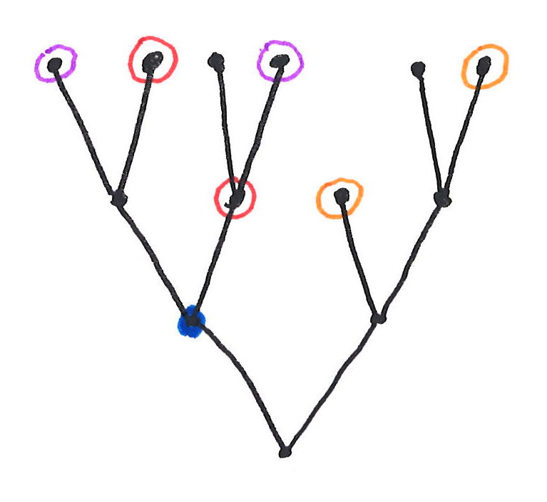
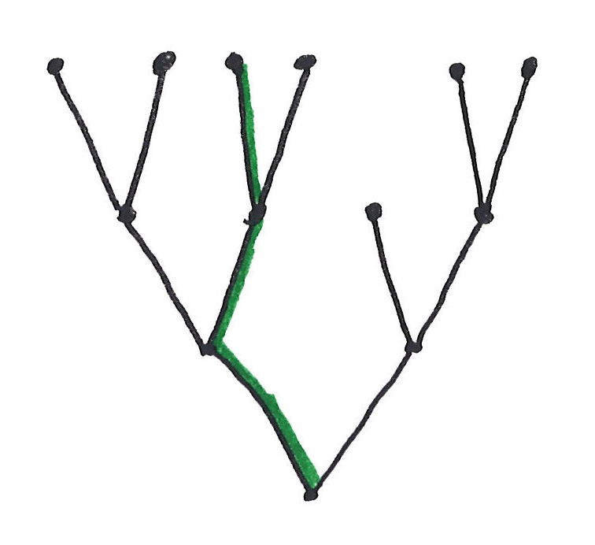

NSOP₁ Tutorial
This page collects slides and accompanying material for a tutorial on NSOP₁ theories and Kim-independence, given at the 2026 North American Annual Meeting of the Association for Symbolic Logic, Philadelphia, July 19–22, 2026.
The tutorial is an introduction to the class of NSOP₁ theories and the theory of Kim-independence, aimed at logicians without prior background in generalized stability theory. Materials will be posted here as they become available.
Questions and corrections are welcome at sramsey5@nd.edu.

Slides
- Lecture 1: The evolution of independence, pdf.
Documents
(Notes, exercises, and other material will be posted here.)
Background Reading
- "NSOP₁ as a Dividing Line," Logic and Its Applications (ICLA 2025), Lecture Notes in Computer Science, vol. 15402, Springer, 2025, doi.
- Full list of references, pdf.
